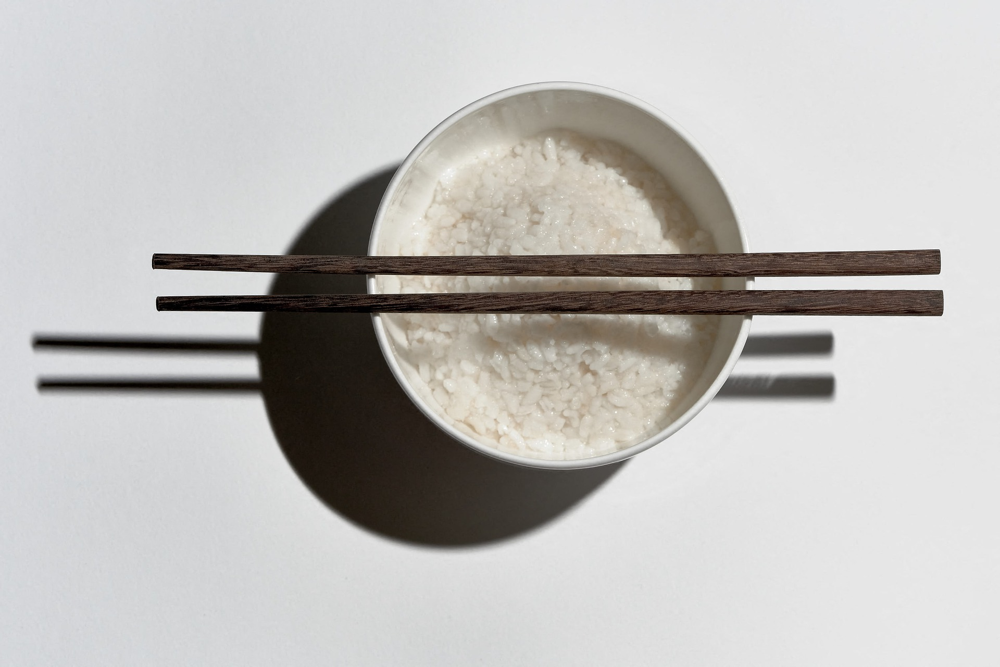
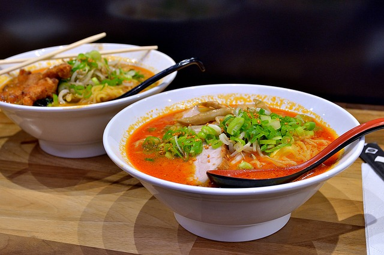

Sushi
.jpg)
Sushi is a traditional Japanese dish of prepared vinegared rice, usually with some sugar and salt, accompanied by a variety of ingredients, such as seafood, often raw, and vegetables. Styles of sushi and its presentation vary widely, but the one key ingredient is "sushi rice" also referred to as shari, or sumeshi.
Home pageRice
Japanese rice refers to a number of short-grain cultivars of Japonica rice including ordinary rice and glutinous rice. Ordinary Japanese rice, is the staple of the Japanese diet and consists of short translucent grains. When cooked, it has a sticky texture such that it can easily be picked up and eaten with chopsticks. Glutinous rice, is used for making special dishes such as sekihan. It is a short-grain rice, and can be distinguished from uruchimai by its particularly short, round, opaque grains, its greater stickness when cooked, and firmer and chewier texture.
Ramen
Ramen is a Japanese noodle soup. It consists of Chinese-style wheat noodles served in a meat fish-based broth, often flavored with soy sauce or miso, and uses toppings such as sliced pork dried seaweed, menma and scallions. Nearly every region in Japan has its own variation of ramen, such as the pork bone broth ramen of Kyushu, and the miso ramen of Hokkaido